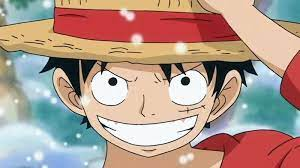
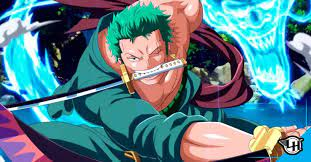

One Piece

A série foca em Monkey D. Luffy, um jovem feito de borracha, que, inspirado em seu ídolo de infância, o poderoso pirata Shanks,
o Ruivo, parte em uma jornada do mar do East Blue para encontrar o tesouro mítico, o One Piece, e proclamar-se o Rei dos Piratas.
A saga que marca o começo de One Piece tem início nos mostrando como o protagonista Monkey D. Luffy acidentalmente consumiu a a fruta Akuma no Mi e ganhou suas habilidades de borracha ainda criança.
Embora a fruta também tenha causado a perda de sua capacidade de nadar, ele não deixou que isso afetasse seu sonho de encontrar o tesouro One Piece e se tornar o Rei dos Piratas.
Com o passar dos anos, Luffy aprende a controlar melhor suas habilidades. No decorrer dos episódios, ele vai recrutando sua tripulação,
vivendo diferentes aventuras e grandes perigos a cada novo tripulante que tenta convencer a se juntar a sua equipe.

Nesta saga, o protagonista enfreta diferentes conflitos. A luta contra um capitão da marinha. O embate com o perigoso pirata Buggy
e o temido Capitão Kuro. A conquista do Going Merry (primeiro navio do grupo de Luffy). O momento em que fica frente à frente
com o tirânico Arlong. Luffy passou por tudo isso conforme foi reunindo outros aventureiros em sua tripulação, os Piratas do
Chapéu de Palha, até aqui formada por Luffy, Roronoa Zoro, Nami, Usopp e Sanji.
